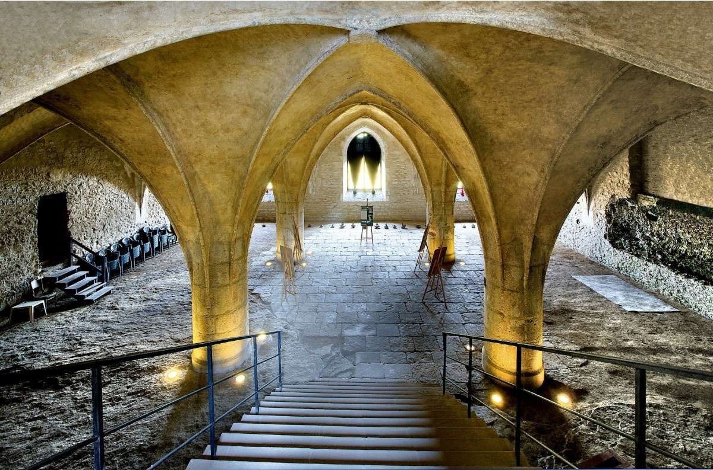
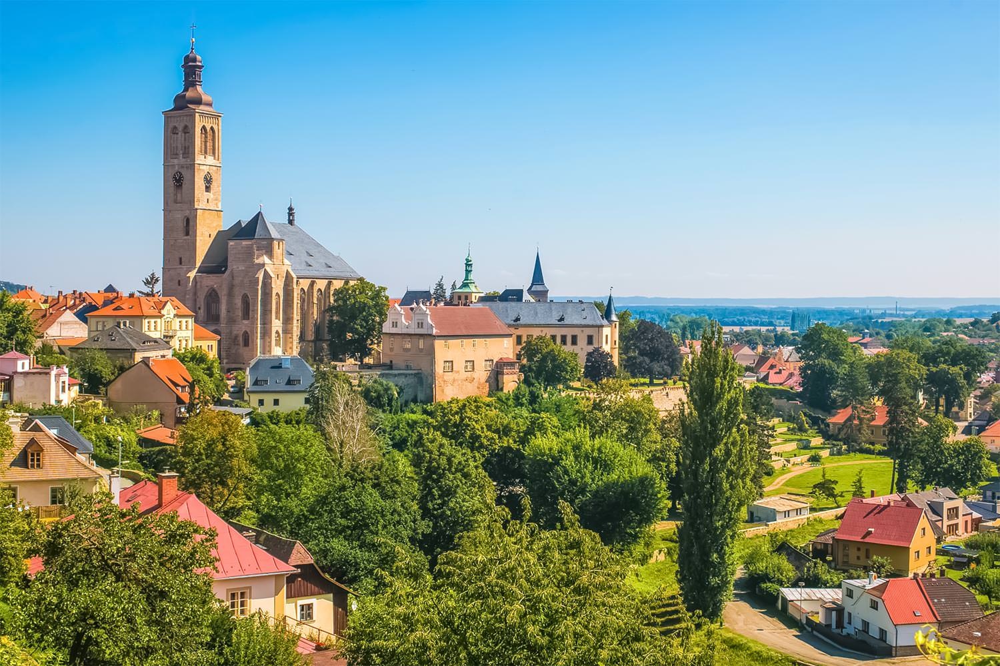
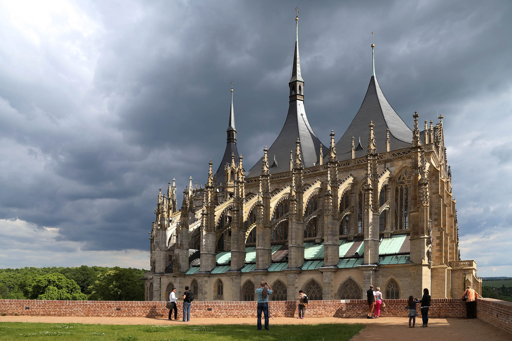
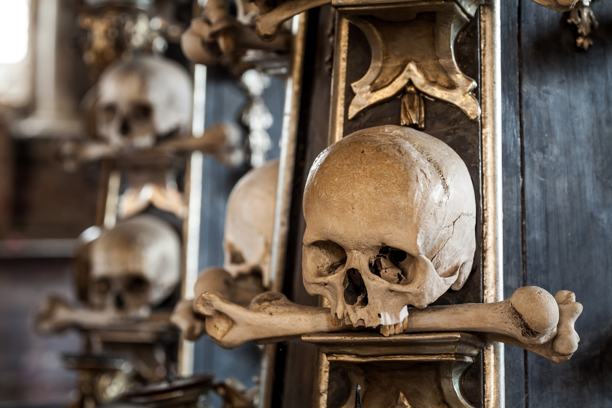

A historic town in Central Bohemia, famous for its medieval silver mines, impressive Gothic architecture and the unique Sedlec Ossuary.
Kutná Hora became an important medieval town thanks to its rich silver deposits. During the Middle Ages, silver mining brought great wealth to the town and helped it become one of the most significant places in the Kingdom of Bohemia.
Today, Kutná Hora is known for its historic streets, beautiful churches and well-preserved architecture. Its historic centre and several important monuments are part of a UNESCO World Heritage Site.

St. Barbara's Church is one of the most famous Gothic buildings in Czechia. Dedicated to the patron saint of miners, it reflects the importance of silver mining in the history of Kutná Hora.
The church is known for its impressive architecture, detailed decorations and high vaulted ceilings. Visitors can explore its interior and admire the views of the surrounding historic town.

The Sedlec Ossuary is a small chapel beneath the Cemetery Church of All Saints in the Sedlec district of Kutná Hora. It is famous for its unusual interior decorations made from human bones.
The chapel has become one of the town's most well-known attractions because of its distinctive design and history. It offers visitors a unique look at historical traditions surrounding death and remembrance.

Kutná Hora offers many places to explore, including St. Barbara's Church, the Sedlec Ossuary and the historic Italian Court. Visitors can also walk through the old town, discover medieval streets and learn about the area's mining history.
The combination of Gothic architecture, medieval history and unusual landmarks makes Kutná Hora a fascinating destination for anyone interested in Czech history and culture.